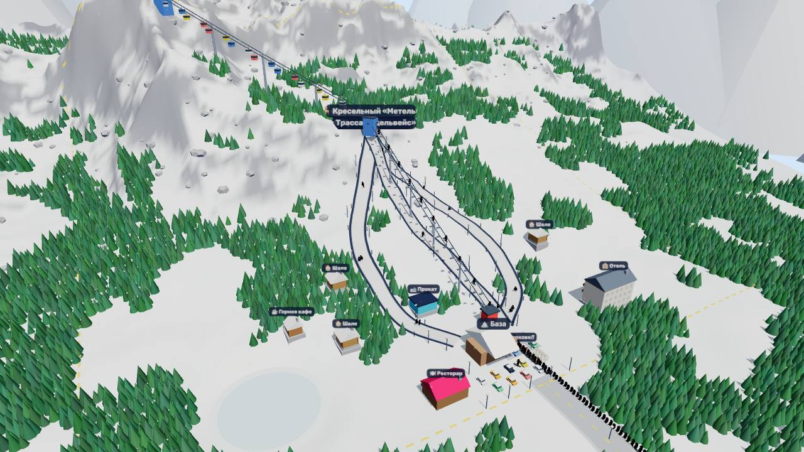
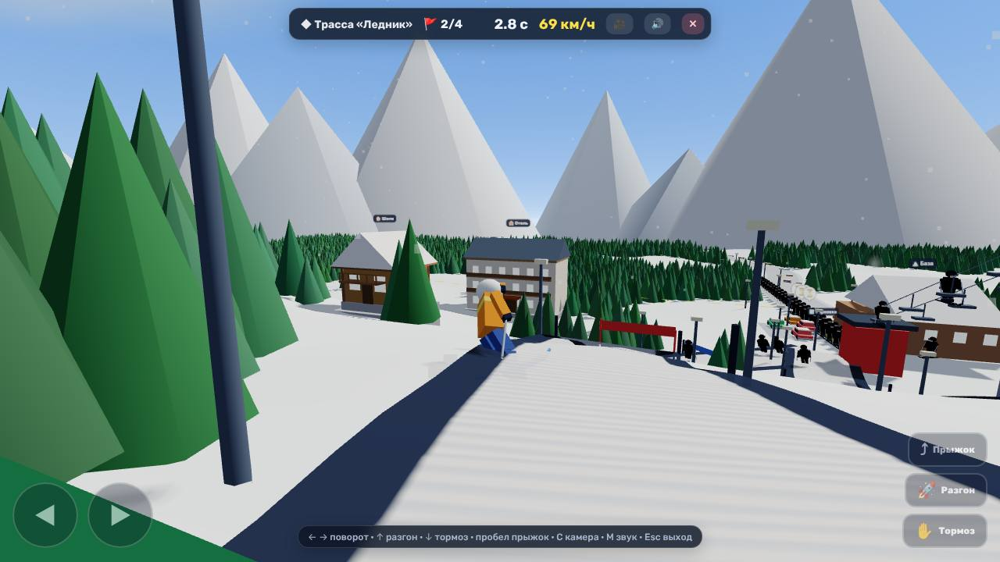
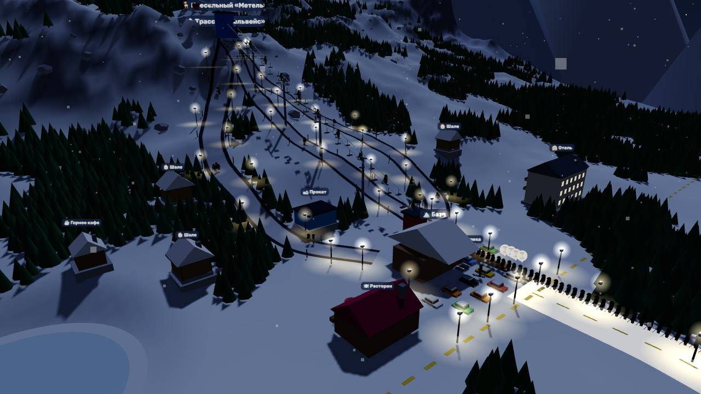

Построй свой горнолыжный курорт
Прокладывай трассы по настоящим склонам, ставь подъёмники и гондолы, строй отели и рестораны. А потом сам спустись по своей трассе.

☀️ Твой курорт днёмЦелая гора в твоих руках
Подъёмники
Бугель для новичков, кресельный и быстрая гондола на вершину. Улучшай их, не сноси. Они иногда ломаются, и мастерская их чинит.
Трассы по склону
Рисуешь трассу точками, а цвет сам подсказывает крутизну. Новичкам нужны зелёные, экспертам — двойной ромб.
Отели и рестораны
Шале, отель, кафе на горе, прокат, парковка, спасатели. У каждого здания есть своя польза для гостей.
День и ночь
Закат, звёзды и луна. Повесь фонари, и гости будут кататься до 21:00.
Погода
Свежий снег приводит толпы, оттепель портит трассы, и тогда выручают снежные пушки. На каждый день есть прогноз.
Расти дальше
Покупай соседние участки, поднимай уровень курорта и открывай новые горы с большим стартовым капиталом.

⛷️ Спуск по своей трассеСпустись сам по трассе, которую построил
- 🎿 Честная физика: канты держат в повороте, на резком вираже лыжи заносит
- 🚩 Слалом-ворота: пропустил — +2 секунды
- 👻 Призрак рекорда едет рядом и показывает, где ты быстрее
- ✈️ Прыжки с бугров, падения в лесу, следы на снегу и ветер в ушах
- 🎥 Три камеры: сзади, издалека и от первого лица
На компьютере: ← → поворот, ↑ разгон, ↓ тормоз, Пробел прыжок. На телефоне — большие кнопки на экране.
Четыре шага до первых гостей
Подъёмник
Нажми у базы (жёлтый круг), потом выше по горе.
Трасса
От верхней станции ставь точки вниз и закончи у базы.
Ресторан
Голодные гости платят и становятся довольнее.
Забери приз
Задания слева сверху: выполнил, нажал «Забрать», получил деньги.
Так выглядит курорт

Коротко о главном
Это бесплатно?
Да. Игра целиком бесплатная, без рекламы внутри и без регистрации.
Как поставить на телефон?
Android (Chrome): меню ⋮ → «Установить приложение». iPhone (Safari): «Поделиться» → «На экран „Домой“». Появится иконка, игра откроется на весь экран и будет работать даже без интернета.
Где хранится прогресс?
В твоём браузере на этом устройстве. Игра сохраняется сама после каждой постройки и в конце каждого дня.
Тормозит на старом телефоне
В меню ⚙ → «Графика» выбери «Низкую». Игра и сама снижает графику, если заметит, что стало тормозить.
Можно играть в Телеграме?
Да, игра умеет открываться как мини-приложение Telegram: на весь экран и с вибрацией при постройке.
Гора ждёт первых лыжников
Начни с одного подъёмника и одной трассы — а дальше отели, гондолы и ночные спуски.
▶ Играть бесплатноНравится игра? 💛 Поддержать автора